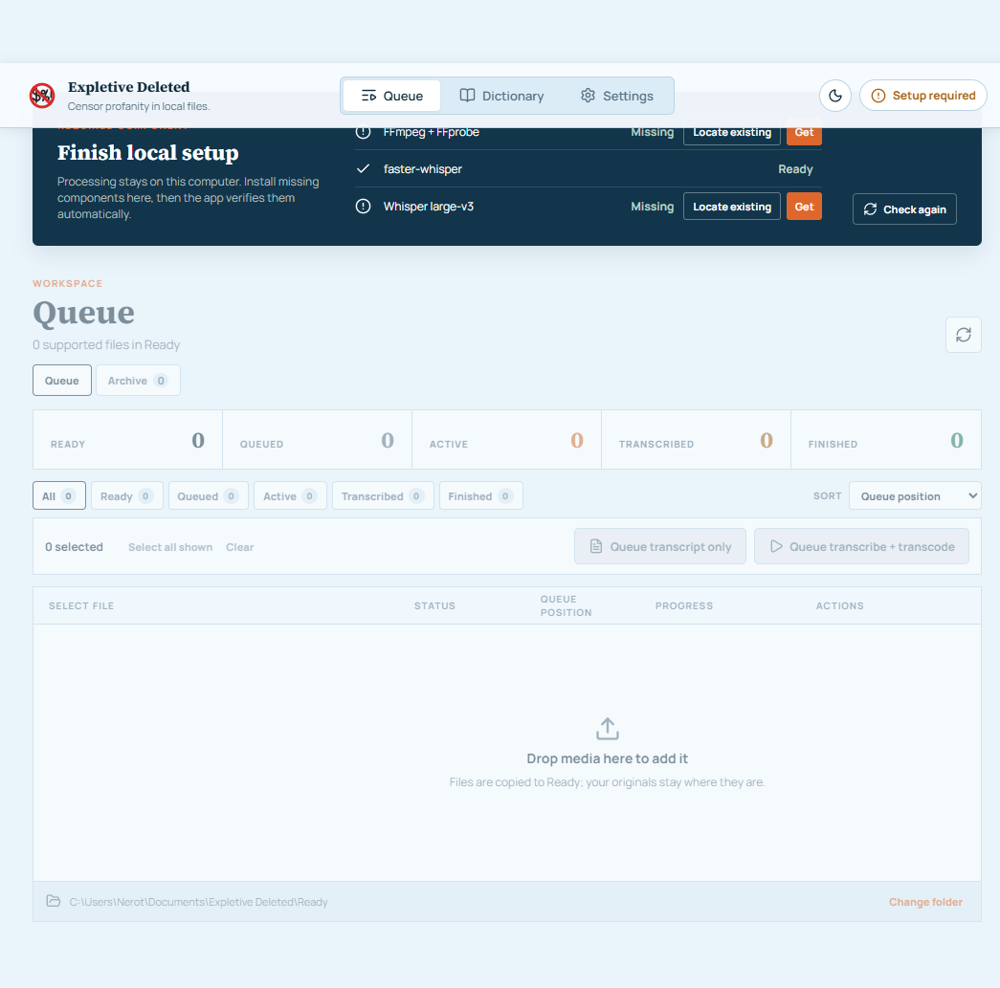

Windows desktop · Version 1.0.4
Expletive Deleted
Censor unwanted language in audio and video without sending your family's media to the cloud.
Free to download. Your originals stay yours. Support development on Ko-fi
A clear, repeatable workflow
From original to family-ready copy
Expletive Deleted handles the technical pieces while keeping every important choice visible.
- 01
Add your media
Drop an audio or video file into the Queue. Adding it never starts processing automatically.
- 02
Choose your words
Customize the list, create a local transcript, and choose exactly what to censor or ignore.
- 03
Create a censored copy
Mute detected intervals or use stereo dialogue cancellation, then review the finished file.
Built for control
See every file, job, and result
The serial Queue shows what is ready, waiting, processing, transcribed, or finished. Nothing begins because a file happened to appear.
- Transcribe only for a safe first review
- Transcribe and transcode when your policy is ready
- Retry, retranscribe, or retranscode deliberately

Private by design
Your media does not need to leave home
No media uploadsSpeech recognition and censorship run locally.
No silent overwritesDestination conflicts stop with a clear error.
No hidden cleanupFailed or cancelled jobs retain the source and remove incomplete output when safe.
No false promisesAutomated transcription is not perfect, so finished media should be reviewed.
Before your first file
Guided setup, with you in control
The Windows installer contains Expletive Deleted itself. Processing components are installed separately and verified during first-run setup.
Runs the local processing service.
Inspect media and create censored output.
Provide local speech recognition and word timing.
Expletive Deleted 1.0.4
Make a copy you can share with confidence.
Keep the original. Choose the words. Review the result.